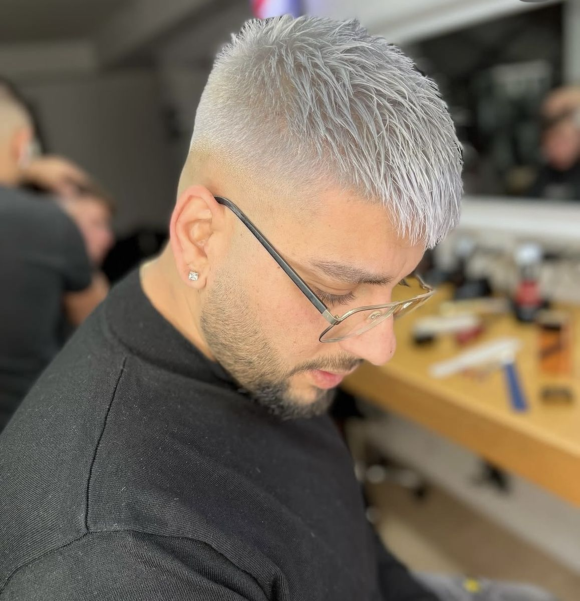
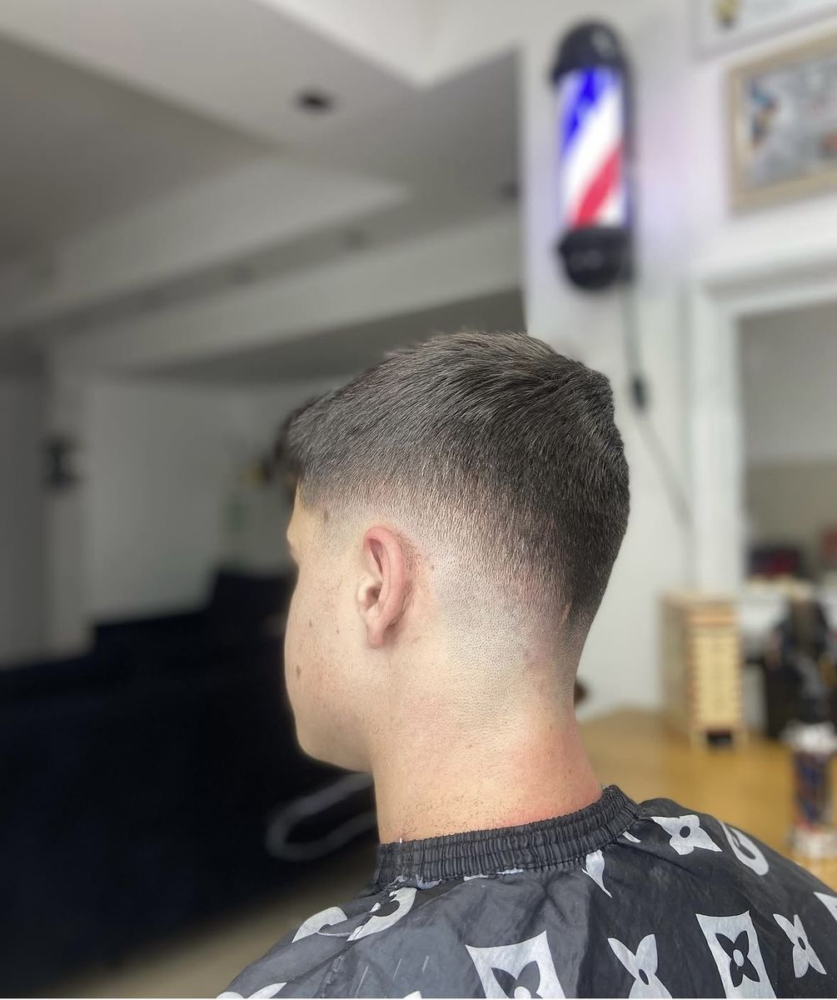
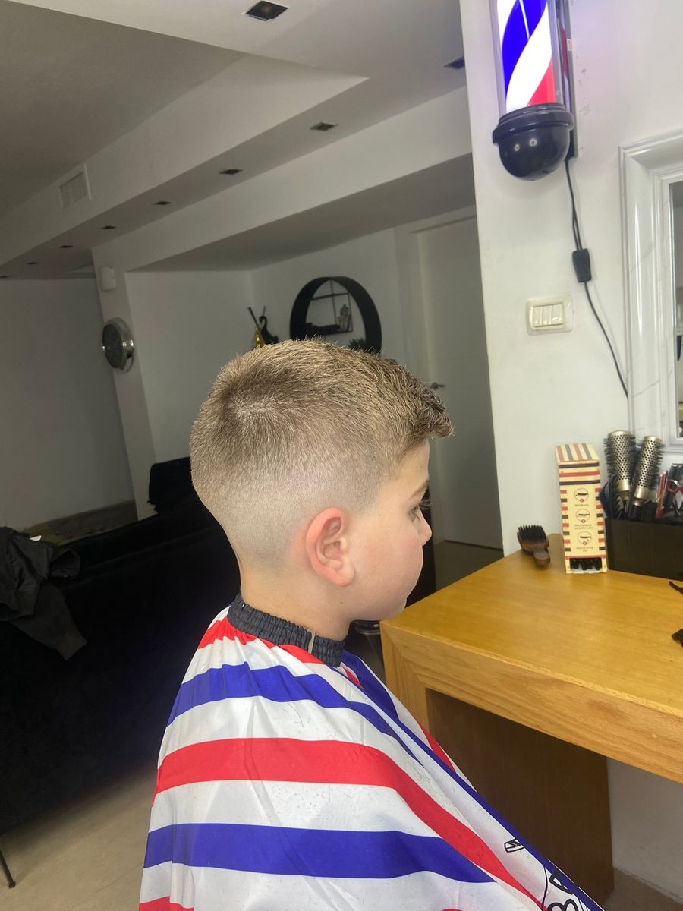
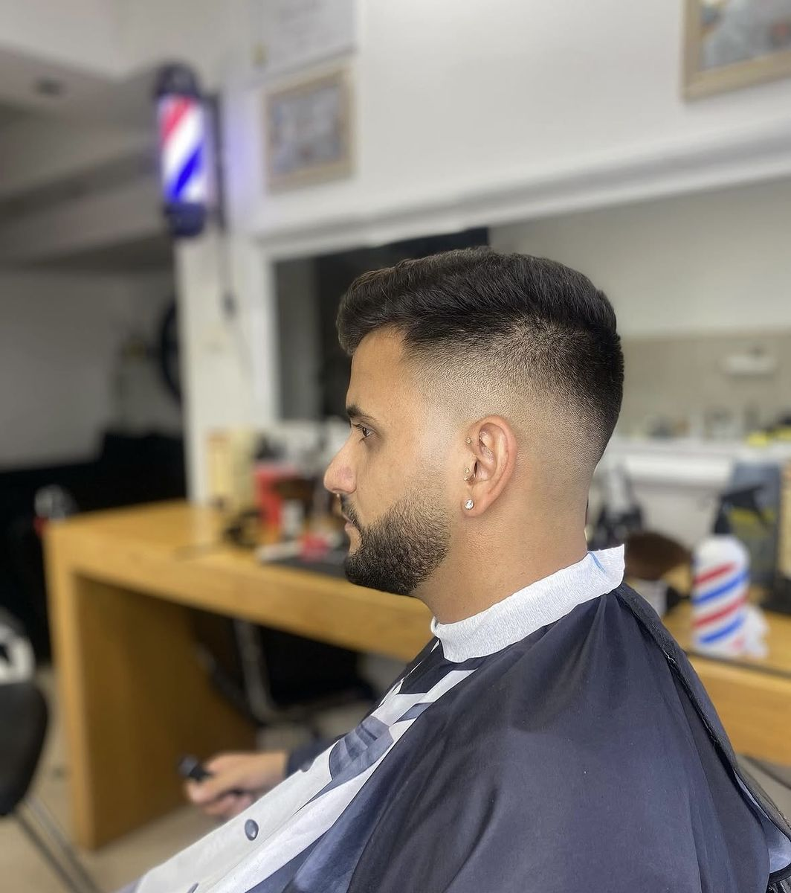

אור
054-7324831TwinscutTwinscutמספרת גברים בנשרMen’s barbers, Nesher
המספרה של האחים אור ודור, הסחלב 17.The barbershop of brothers Or and Dor, 17 HaSahlav St.
תמונה מהמספרהPhoto from the shop
שני אחים,Two brothers, מספרה אחת.one shop.
בלוגו שלהם, אור מסתתר בתוך דור. בחרו למי לכתוב.In their logo, OR hides inside DOR. Pick who to message.
הפייד,The fade, מקרוב.up close.
תמונות מהכיסא, כמו שהן.Shots from the chair, as they are.
סקין פייד




הסחלב 17,17 HaSahlav, נשר.Nesher.
קובעים תור מראש, ומגיעים.Book ahead, then come by.
5.0
מ-77 ביקורות בגוגלfrom 77 Google reviews
נא לקבוע תורים מראש.Please book ahead.
כך כתוב על הכרטיס שלהם.As their own card says.
תור אצלBook with אור או דור.Or or Dor.
געו במילים כדי לשנות. ההודעה מוכנה לשליחה.Tap the words to change them. The message is ready to send.
5.0, מ-77 ביקורות.from 77 reviews.
שלוש מהן, מילה במילה.Three of them, word for word.
-
אור ודור אלופים. הכינו אותי לחתונה, דאגו שהשיער יהיה מסודר בידיוק איך שאני רצו, וככה שהשיער החזיק כל היום וכל האירוע. הכל עם אווירה טובה וחיוכים.
“Or and Dor are champions. They got me ready for my wedding and made sure my hair was exactly the way I wanted, so it held all day and through the whole event. All with a great vibe and smiles.” (translated from Hebrew)
Omer Lerman · Google
-
המספרה בבעלות 2 אחים שיודעים לתת תספורות ברמה גבוה מאוד. תמיד יוצא מהם מרוצה. אור ודור שני מקצוענים ואני שמח שאני יכול לתת המלצה חמה על שניהם.
“The shop is owned by 2 brothers who give haircuts at a very high level. I always leave happy. Or and Dor are two professionals and I’m glad I can warmly recommend them both.” (translated from Hebrew)
Ofek Glick · Google
-
אין יותר מדי להסביר זה פשוט המקור הכי מקצועי שיש בכל תחום הספרות.
“Not much to explain, it’s simply the most professional place there is in the whole field of barbering.” (translated from Hebrew)
Almog Fishman · Google
לפניBefore שמגיעים.you come.
צריך לקבוע תור?Do I need to book?
כן. על הכרטיס שלהם כתוב ״נא לקבוע תורים מראש״. אפשר בטלפון או בוואטסאפ, לאור או לדור.Yes. Their card says “please book ahead”. Call or WhatsApp, Or or Dor.
מה המספרים?What are the numbers?
אור: 054-7324831 · דור: 054-7324830Or: 054-7324831 · Dor: 054-7324830
מתי פתוח?When are you open?
ראשון ושני 10:00–19:00, רביעי וחמישי 10:00–20:00, שישי 8:00–14:00. שלישי ושבת סגור.Sun–Mon 10:00–19:00, Wed–Thu 10:00–20:00, Fri 8:00–14:00. Closed Tuesday and Saturday.
מספרים גם ילדים?Do you cut kids’ hair?
כן, בין התמונות של המספרה יש גם תספורות של ילדים.Yes, the shop’s own photos include kids’ cuts.
איפה זה?Where is it?
הסחלב 17, נשר. המפה למטה.17 HaSahlav St, Nesher. The map is just below.
נתראהSee you ברחוב הסחלב.on HaSahlav.
שלישי ושבת סגורClosed Tue and Sat